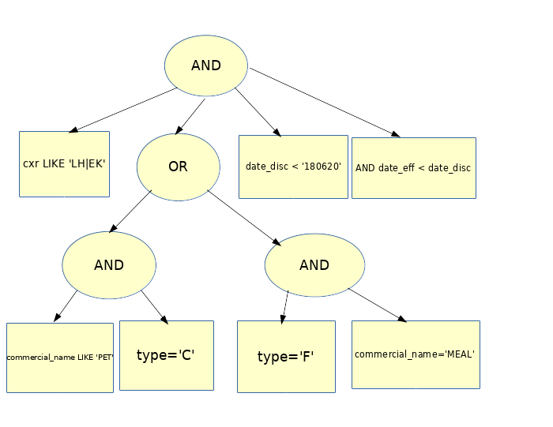
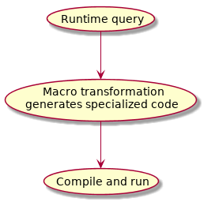

Uniform Structured Syntax, Meta Programming and Runtime Compilation
Table of Contents
1 Intro
Often times I hear the claim that (programming language) syntax doesn't matter or if it does, it's only to provide some subjective readability aestetics. It's somewhat surprising to me how large majority of supposedly rational people like programmers/computer scientists would throw out objectivity with such confidence. So let me provide a real world case where uniform syntax enables out of the box solution which is qualitatively simpler. Also there's popular belief that abstraction and flexibility are at odds with performance. Watch out!
2 The Problem
Here's my situation: there are over 100 let's say plain text DBs, each one containing lines of different fixed-size fields format. Let's assume lines within a single DB have same format.
# part of the record S5 db S5EK OCSEK 00000000Z 151217999999CBF X FLEX CONDITION 0000000000000000 S5LH OC021 00000000F 160629999999IBG CY PE08 1CPETC 201PET IN CABIN DOG 0003444200000000 # part of the category 1 db 3200100030530CNNX02110000000000000000396626 NRNTR 3200100030531CPNX 0000000000000000396627 NRNTR 3200100030622UNN 110000000000000000000000
So you can consider that each DB has a schema where each field is located at a fixed offset from the beginning of the line. We have to provide (subset of) SQL-like operations over them1, for example:
SELECT cxr,subcode,commercial_name FROM recordS5 WHERE cxr LIKE 'LH|EK' AND ((commercial_name LIKE 'PET' AND type='C') OR (type='F' AND commercial_name='MEAL')) AND date_disc < '180620' AND date_eff < date_disc SELECT COUNT(*) FROM category1 WHERE age_min <= 28 AND 28 <= age_max AND (tbl_no < '00050000' OR tbl_no > '01000000')
(prompts if you guess the domain from these, also no, I've never been affiliated with the well known Lisp company in that sector)
We'll have to iterate all DB entries, check the WHERE filter over each line and extract information to be returned in case it passes. These queries can happen to run over billions of entries so we'll eye some "systems" language, band-aids like Python are out of question.
Let's focus only on the filter condition. WHERE is essentially a tree where intermediate nodes are boolean operations and, or or not and leaves being concrete line field operation - comparison, regular expression matching, either with constant string or other field.

3 Approach I
So how do we go about it? A straightforward way is to create a tree structure instance mirroring the where clause and a matcher would traverse this tree for each line to see if the clause is satisfied.
3.1 WHERE tree
Can look something like:
struct WhereNode { OperationType op; // and, or, not, regex, stringEq, stringNEq, stringLess, stringMore... // not used by and/or/not nodes FieldId field1; // index within array with field offset and size information FieldId field2; // may be empty std::string filter; // may not be applicable std::vector<WhereNode> children; // only and/or/not nodes have children }
3.2 WHERE matcher
Traverses the WHERE tree in depth first order and performs short-circuit evaluation:
bool match(const char *dbLine, const WhereNode &clause) { switch(clase.op) { case WhereAnd: { for(const auto &child : clause.children) { if(!match(dbLine, child)) return false; } return true; } case WhereOr: { for(const auto &child : clause.children) { if(match(dbLine, child)) return true; } return false; } case WhereNot: { assert(1 == op.children.size()); return !match(dbLine, op.children.front()); } default: // line field operation { return applyWhereOp(dbLine, clause); } } }
The applyWhereOp procedure would switch on the operation type and the fields/constants provided and apply some comparison operation, regex matching, something. Easy-peasy!
If there's one problem with the above, it would probably be that match is recursive (and not in good tail-recursive way) and the compiler wouldn't be that jubilant. There probably is a way to linearize the WHERE tree but I'm a little concerned to think out in depth how to conserve the short-circuiting without backtracking and getting a headache.
4 Approach II
4.1 Prelude
I actually didn't consider Approach I at all until much later, and that for educational purposes. Let's lay back and imagine the following scenario from days of yore - someone comes along and strikes:
Can you extract me this and that field where such and such conditions are met? Like in the next hour? Thankyouverymuch!
What then, one-off program? I bet in such case you'd write something quick & dirty, morally equivalent to:
bool match(const char *dbLine) { const std::regex cxrRegex("LH|EK"); const std::regex commercialNameRegex1("PET"); const std::regex commercialNameRegex2("MEAL"); return (std::regex_match(dbLine + CXR_OFFSET, dbLine + (CXR_OFFSET + CXR_SIZE), cxrRegex) && ((std::regex_match(dbLine + COMMERCIAL_NAME_OFFSET, dbLine + (COMMERCIAL_NAME_OFFSET + COMMERCIAL_NAME_SIZE), commercialNameRegex1) && dbLine[TYPE_OFFSET] == 'C') || (dbLine[TYPE_OFFSET] == 'F' && std::regex_match(dbLine + COMMERCIAL_NAME_OFFSET, dbLine + (COMMERCIAL_NAME_OFFSET + COMMERCIAL_NAME_SIZE), commercialNameRegex2))) && strncmp("180620", dbLine + DATE_DISC_OFFSET, DATE_DISC_SIZE) < 0 && strncmp(dbLine + DATE_EFF_OFFSET, dbLine + DATE_DISC_OFFSET, DATE_DISC_SIZE) < 0); }
Which is about as simple and efficient (save for some clause reordering that can be done in order to push cheaper checks earlier) as one can get. No recursion, no switches, no loops. Some contrast to the general solution! Ignoring syntax noise, this is direct translation of the WHERE condition.
Now imagine if on receiving a query we could temporarily pause time, write a simple and efficient matcher tailored to the specific query and then let it fly over the DB. We must remember to unpause cosmic time of course! Only if we had such superpower.
4.2 Embedded domain specific languages
By the way did you notice how ugly I've made the one-off thing look? All those parenthesis, like some broken old Lisp! We said we are interested only in "systems" languages but let's see how we'd approach this problem from Common Lisp's side2.
The usual thing to do is embed a DSL. For example, we could represent the selection thing like this:
(select (cxr subcode commercial_name) recordS5
:where (and (like cxr "LH|EK")
(or (and (like COMMERCIAL_NAME "PET")
(= type "C"))
(and (= type "F")
(like commercial_name "MEAL")))
(< "180620" date_disc)
(< date_eff date_disc)))
Don't know about you, but on my eyes this looks better than SQL's supposed to be humane syntax.
So select could be a macro which transforms the above to a function which goes map-reducing over the given DB and calls it.
(defmacro select (field-list db :where where) "Generate map-reduce selection code." ;; ... )
4.3 WHERE tree
Let's just look at the WHERE transformation. We can mirror the query tree and replace some parts with "real" code:
(defun build-where (where spec) "Create mirror tree for WHERE. SPEC contains fields' offset and size information." (when (consp where) (let ((op (first where))) (cons (if (member op '(and or not)) op (build-field-op op spec)) (build-where (rest where) spec)))))
Where build-field-op based on the field operation and fields and constants involved and given the specification for field offsets and sizes would generate appropriate code for particular operation. Here's how the compiler expanded WHERE part of the code could look like:
(AND (CL-PPCRE:SCAN "LH|EK" LINE :START CXR_OFFSET :END (+ CXR_OFFSET CXR_SIZE)) (OR (AND (CL-PPCRE:SCAN "PET" LINE :START COMMERCIAL_NAME_OFFSET :END (+ COMMERCIAL_NAME_OFFSET COMMERCIAL_NAME_SIZE)) (CHAR= (AREF LINE TYPE_OFFSET) #\C)) (AND (CHAR= (AREF LINE TYPE_OFFSET) #\F) (CL-PPCRE:SCAN "MEAL" LINE :START COMMERCIAL_NAME_OFFSET :END (+ COMMERCIAL_NAME_OFFSET COMMERCIAL_NAME_SIZE)))) (STRING< "180620" LINE :START1 0 :END1 6 :START2 DATE_DISC_OFFSET :END2 (+ DATE_DISC_OFFSET DATE_DISC_SIZE)) (STRING< LINE LINE :START1 DATE_EFF_OFFSET :END1 (+ DATE_EFF_OFFSET DATE_EFF_SIZE) :START2 DATE_DISC_OFFSET :END2 (+ DATE_DISC_OFFSET DATE_DISC_SIZE)))
That's analogical to the C++ one-off version. With such simple, straightforward code and a few declarations, the SBCL compiler in particular would be able to match a C++ compiler even skipping array bound checks if one decides so.3
5 Addendum
5.1 Manual JIT
Here's the essence of Approach II:

I like to call this tactic of plugging in Ahead-Of-Time compilation on the fly (runtime) to assemble specialized code "Manual Just-In-Time compilation". Works at a higher level than JIT and opens opportunities for greater (while orthogonal) gain and as seen even algorithm simplification. This doesn't work (at least is not portable) for languages which leave only minimal dead skeleton of the program for runtime like…er, about all compiled languages. It's idiomatic and easy in most Lisps through macros. Common Lisp is especially suited with:
- optional variable type declarations
- compiler can be evoked at runtime (the compile function)
- per function re/compilation over several dimensions and levels of optimization
- per function disassembly
- designed for (image based) system evolution
Some CL implementations can leverage type declarations to rival static language AOT compilers4. SBCL even provides hints where and why a micro optimization couldn't be applied to guide type declaration refinements:
source.lisp:4:3:
note:
forced to do GENERIC-+ (cost 10)
unable to do inline fixnum arithmetic (cost 2) because:
The second argument is a NUMBER, not a FIXNUM.
The result is a (VALUES NUMBER &OPTIONAL), not a (VALUES FIXNUM &REST T).
unable to do inline (signed-byte 64) arithmetic (cost 5) because:
The second argument is a NUMBER, not a (SIGNED-BYTE 64).
The result is a (VALUES NUMBER &OPTIONAL), not a (VALUES (SIGNED-BYTE 64)
&REST T).
etc.
Through meta-programming (where Lisps excel at) one can generate practically static code for optimal performance. The ability to see how a function's disassembly changes corresponding to code adjustments is also quite helpful and insightful.
5.1.1 Eval?
I can hear you say:
All those parenthesis, my eyes! Sir, just use "modern" dynamic language which provides eval function!
And you'd be right with these caveats:
- string manipulation to cover random syntax is error prone
- it's still interpretation, not compilation (maybe some JavaScript compiler is exception?)
In contrast to random-syntax code-is-a-string-blob languages, Lisps deal with already parsed trees basically all the time. Simple and reliable to generate, traverse, transform. DSLs become so easy to implement, it feels like cheating.
5.2 Alternative syntax
One may object that all falls into pieces only if we limit the user to use S-expressions. What if forced to literary provide SQL syntax? Common Lisp in particular has programmable reader (through reader macros) which allows to make read time transformation of more funky syntax to good ole S-expressions and keep the same approach.
6 Further reading
Looking at conferences' materials, lispers (at least the Common breed) often take advantage of such techniques5 for difficult problems but seem troubled to gain attention of the outside world.
I've been rooting for the Gentle Introduction to Compile-Time Computing series to really launch for deeper descend into the matter but even the outline can suggest what sort of magic is possible.
Footnotes:
One may rightfully note that such data seems plain meant for SQL storage. There are some complications in reality including size, performance needs and slight deviations from the fixed format why this is not done.
Although Common Lisp is dynamically typed language and everyone "knows" all such languages are slow, CL is rare exception. One reason is history. Lisps were the primordial wave of dynamic languages and had to run acceptably on quite limited hardware compared to nowadays. Lisps were crafted in ways where possibility for performance optimizations were kept in sight and with Moore's law still progressing - they were gradually catching up the statically typed languages. To the point where operating systems were written from the ground up. With Common Lisp being merger of the original line of dialects, there are many places in its specification where freeways for implementations to perform optimizations are present.
In fact, in the same vein the cl-ppcre library goes a step further (than usual compiled languages) to build regex scanners for the literals at compile time thanks to (read time) compiler macro.